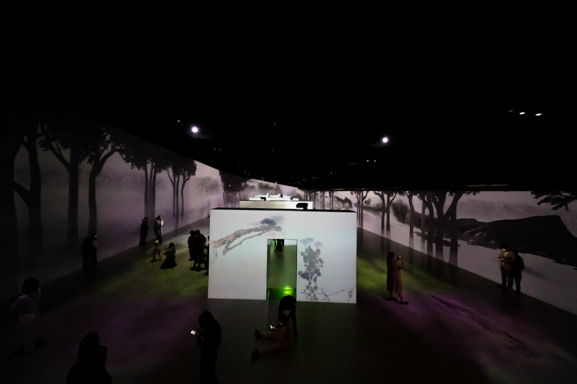

濟州島行程
🍊
Day 02 濟州島西部
☕
白天咖啡店推薦：

바이못 (by MOT)
結合水泥工業風與溫潤木質造景的潮流咖啡空間。店名意為隱密的休息池塘，提供極具美感與質感的環境與特調。
✨
招牌推薦與亮點：
☕ MOT 特調奶油拿鐵 (Signature Cream Latte)
香醇濃郁的綿密奶泡搭配深烘焙咖啡，甜而不膩且口感滑順。
🍰 手工法式甜點 & 濟州柑橘塔
每日限量的精緻手工甜點，擺盤極具藝術感，視覺與味覺雙重享受。
💡 貼心小提醒：
- 📸 拍照角度：角落的水泥光影牆與極簡桌面是 SNS 熱門拍照位置。
- 📅 公休確認：熱門質感小店公休日偶有調整，建議出發前至 Instagram 確認營業動態！
早上景點選擇
9.81파크 제주
以重力加速度為主題的高科技賽車園區！賽車下滑感受極速狂飆，回程自動駕駛欣賞海景，還能自動下載專屬賽車高清影片！
✨
熱門設施與設施亮點：
🏎️ GR (Gravity Racing) 重力賽車
無引擎完全依靠重力衝刺，時速最高達 60km/h！賽後免費於 App 下載個人競速影片。
🎮 LAB 981 室內科技體育館
包含實境射擊、棒球打擊、足球、騎馬、VR 體驗等十多種室內互動體感遊戲。
🍕 BROC`3 小餐館 & 戶外 high swing
園區內備有美食區與周邊商店，還有 360 度旋轉星際碰碰車與高空鞦韆等極限體驗。
💡
行前注意事項
- 📸 服裝要求：須穿著包鞋/球鞋(嚴禁拖鞋與涼鞋)
- 📅 APP：如果要玩在台灣就先下載好[9.81 Park]官方APP並完成註冊，才能紀錄成績與下載比賽影片
- 🎟️ 購票方式：可直接於 Klook、KKday 等平台預訂「賽車 + 室內體驗組合套票」，現場掃 QR Code 換手環免排隊，價格也比現場買划算！

아르떼뮤지엄 제주
韓國最大沉浸式數位藝術館！1400坪舊工廠打造「永恆自然」主題，視覺、聲音與香氛的全方位感官盛宴。
✨
必看展區與特色體驗：
🌊 WAVE 巨浪 & 🌸 FLOWER 花海
震撼力極強的裸眼 3D 巨浪拍打，以及鏡面無限延伸的夢幻幻影花海。
🌅 BEACH 擬真海灘 & 🦒 夜光野生動物
追逐極光與逼真浪花，還能親手繪畫並將作品掃描投射到巨幅夜光大屏！
🍵 ARTE CAFE 媒體光影茶館
極力推薦！桌面放下茶杯時會綻放出光影花朵，移動杯子花朵也會隨之漂移。
💡
穿搭密技：館內光影豐富，建議穿著白色或淺色系衣服，投影在身上拍照效果極佳！

餐廳選擇
🥩 鄉村黑豬肉 (깡촌흑돼지)

깡촌흑돼지 (鄉村黑豬肉)
位於咸德海水浴場附近的超人氣黑豬肉專賣店！主打厚切炭火烤肉與全程桌邊專人服務。外酥內嫩的厚切黑豬肉配上獨門加熱辣醬與滾燙魚醬，每一口都滿溢肉汁香氣。
💡 貼心小提醒：
- 🥩 必點招牌：建議直接選擇「黑豬肉近肉（흑돼지 근고기）」，一次體驗厚切五花與梅花肉的多汁口感。
- 🍲 推薦副餐：酸香濃郁的黑豬肉泡菜鍋（김치찌개）是解除油脂感、配飯的絕佳選擇。

🥩 頰肉家 翰林店 (뽈살집 한림점)

뽈살집 한림점
專賣濟州黑豬肉 6 種稀有特殊部位（豬頰肉、花肉、眼周肉等）的超人氣烤肉店！肉品擺盤成浪漫玫瑰花造型，肉質鮮嫩多汁且富有彈性，還會免費招待手作漢堡肉、豬皮與熱湯，CP 值極高。
💡 貼心小提醒：
- ⏰ 建議早到：傍晚開門即容易排隊，限量肉品賣完會提前打烊，建議提早前往。
- 🥩 推薦點餐：直接點「모듬구이（特殊部位綜合拼盤）」大/小份即可一次品嚐 6 種部位。
헬로키티아일랜드 (Hello Kitty Island)
滿滿粉紅泡泡的三層樓三麗鷗主題館！包含 Hello Kitty 客廳、臥室、音樂繪畫館、3D 影院與空中花園，充斥各式超萌造景與限定周邊。
✨
館內亮點與必拍推薦：
🏰 1F 故事城堡與夢幻客廳
巨大粉紅城堡城堡塔、Hello Kitty 家族歷史介紹，以及全粉紅裝潢的 Kitty 小屋。
☕ 2F Kitty 主題咖啡廳 & 體驗館
必點 Hello Kitty 造型拿鐵拉花與甜點！周邊還有美樂蒂、酷洛米等好友展示區。
🎬 3F 3D 影院與戶外空中花園
免費觀看 3D 迷你動畫短片，頂樓花園還有大型 Hello Kitty 造型迷宮與綠地。
💡 貼心小提醒：
- 🎟️ 門票優惠：建議出發前先在 Klook / KKday 預訂電子門票，現場出示 QR Code 換票通常比現場買更划算！
- 📷 建議停留時間：約 1.5 ~ 2 小時，全館幾乎都是室內，非常適合做為雨天或炎熱中午的備案景點。
☕
麵包店：
☕
傍晚咖啡店推薦：
⭐ 陸北北 極力推薦！
플로웨이브 (Flowave)
以濟州黑火山岩與水流為主題的視覺感空間。傍晚過後水池中央會上演震撼的「水上點火秀」，如同暗夜中的流動熔岩！
✨
招牌推薦與亮點：
🔥 夜間魔幻水上點火秀
水面與黑色玄武岩燃起熱烈火芒，搭配昏暗燈光與音樂，氛圍感直接拉滿。
🍹 熔岩火山特調 & 精緻輕食餐點
提供特色調飲、咖啡、香濃手工披薩與沙拉盤，很適合安排前來看夜景吃點心。
💡 貼心小提醒：
- ⏰ 最佳入場時間：建議約 17:30～18:00 入場，一次收藏白天黑岩美景與夜間點火奇景！
- 📸 拍照安全：點火期間池畔溫度較高，站在環狀戶外座位區拍攝全景效果最好。
- 📅 天候影響：點火秀如遇大雨或強風可能會暫停，出發前建議先查看官方 IG 動態。
해지개 & 해지개더궁
店名意為「落日之處」。由「本館 (해지개)」與隔壁新館「宮殿館 (해지개더궁)」組成的雙館園區，結合傳統韓屋建築與涯月海景，是欣賞果凍海與金黃夕陽的絕佳景點！
✨
雙館特色與招牌推薦：
🏯 本館 vs 宮殿館 (해지개더궁)
兩館相連（門牌52與56號）。本館主打戶外茅草涼亭海景，宮殿館則富含濃厚的傳統韓式宮殿美學，買好餐點兩邊皆可自由座！
🥐 石頭爺爺造型麵包 & 濟州柑橘塔
每日新鮮現烤多款烘焙甜點，超萌造型極具濟州特色且口感香醇。
🍹 濟州黑芝麻拿鐵 & 柑橘氣泡特調
濃郁的黑芝麻奶霜搭配咖啡，或是清爽解膩的柑橘特調，拍照非常有氛圍感！
💡 貼心小提醒：
- 📍 位置說明：兩間店就在正隔壁，地圖導航到任一間皆可，車子停好後能直接穿梭兩館。
- 🌅 最佳入場時間：建議傍晚日落前 1 小時到達，先逛逛兩館選位置，順便卡位戶外海景區看落日。
- 🚶 順遊路線：位於漢潭海岸散步路旁，喝完咖啡可以順便沿著海岸步道散步拍照。
×